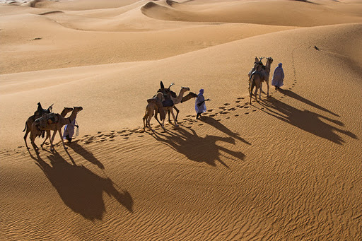
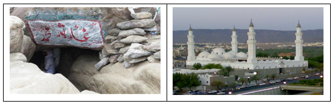

|
1.Peristiwa Hijrah Nabi Muhammad SAW ke Madinah
Hijrah dalam Islam memiliki dua pengertian. Yang pertama yaitu meninggalkan segala macam perbuatan yang dilarang dan dimurkai Allah Swt. Yang kedua adalah berpindah dari suatu negeri ke negeri lain karena di negeri asalnya umat Islam selalu mendapat tekanan, ancaman, dan kekerasan, sehingga tidak memiliki kebebasan dalam berdakwah dan beribadah. Berpindah ke negeri lain tersebut untuk memperoleh keamanan dan kebebasan dalam berdakwah dan beribadah. Hijrah tersebut seperti yang dilakukan oleh Nabi Muhammad Shallallahu Alaihi Wassalam dan para sahabatnya dalam rangka menyelamatkan iman dan Islam serta membangun peradaban baru di tempat baru yaitu dari Mekkah ke Madinah. Setelah Nabi Muhammad saw berdakwah secara terang-terangan, hantaman dan siksaan dari kafir Quraisy mulai meningkat. Kaum kafir Quraisy tidak senang melihat Islam makin berkembang. Mereka terus menerus memusuhi umat Islam dengan cara mengancam, menyiksa dan menghina. Berbagai cara dilakukan kafir Quraisy agar Nabi tidak meneruskan dakwahnya. Usaha-usaha pembunuhan terhadap Nabi dan pengikutnya terus digalakkan. Melihat keadaan itu, Nabi Muhammad SAW berpendapat bahwa Makkah tidak dapat lagi diandalkan sebagai pusat dakwah Islam.  Demi keselamatan Rasulullah dan umat Islam, Allah Swt memerintahkan Nabi untuk hijrah ke Madinah. Maka, Nabi pun melaksanakan Hijrah ke Madinah. Rencana hijrah Nabi Muhammad saw didengar oleh kafir Quraisy. Kaum Quraisy pun akhirnya merencanakan pembunuhan terhadap Nabi. Namun, mereka tidak berhasil, karena Rasulullah sudah pergi terlebih dahulu. 2.Fase Perjalanan Hijrah Nabi Muhammad SAW dari Mekkah ke Madinah Dalam perjalanan hijrah Nabi Muhammad Saw melalui beberapa fase atau tahapan. Perjalanan hijrah dimulai pada tanggal 26 Safar, ditengah malam buta Nabi Muhammad Saw keluar rumah tanpa diketahui para pengepung dari kalangan Quraisy. Pada saat itu Ali bin Abi Thalib diminta untuk menggantikan  posisi nabi Muhammad Saw ditempat tidur untuk mengelabui kaum Quraisy. Nabi Muhammad Saw menemui Abu Bakar untuk keluar dari Mekkah dan keduanya sempat bersembunyi di Gua Tsur yang berdekatan dengan Mekkah selama tiga hari tiga malam. Kemudian pada tanggal 1 Rabiul Awal Nabi Muhammad Saw mulai meninggalkan Mekkah untuk melanjutkan perjalanan ke Madinah yang penuh liku-liku. Di tengah perjalanan menuju Madinah, Rasulullah Saw singgah di Quba’, sebuah desa yang terletak dua mil di selatan Madinah. Di sana beliau membangun sebuah masjid dan diberi nama Masjid Quba. Masjid ini menjadi masjid pertama dalam sejarah Islam. Perjalanan lalu dilanjutkan dan Nabi Muhammad Saw dan Abu Bakar tiba di Madinah pada tanggal 12 Rabiul Awal. Kedatangan beliau telah dinanti-nanti masyarakat Madinah dan sambut oleh warga Madinah dengan penuh suka cita diiringi dengan sya’ir penyambutan yang sangat populer di masyarakat kita, yaitu “Thola’al Badru ‘Alaina”.
|